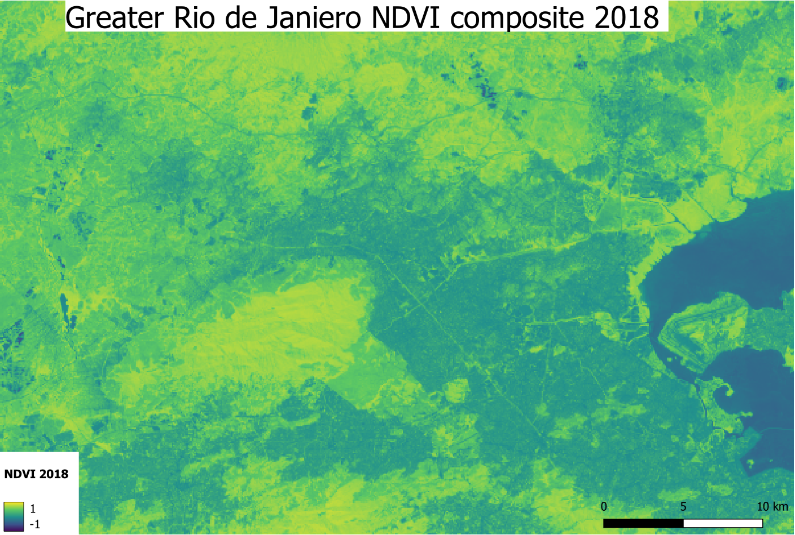
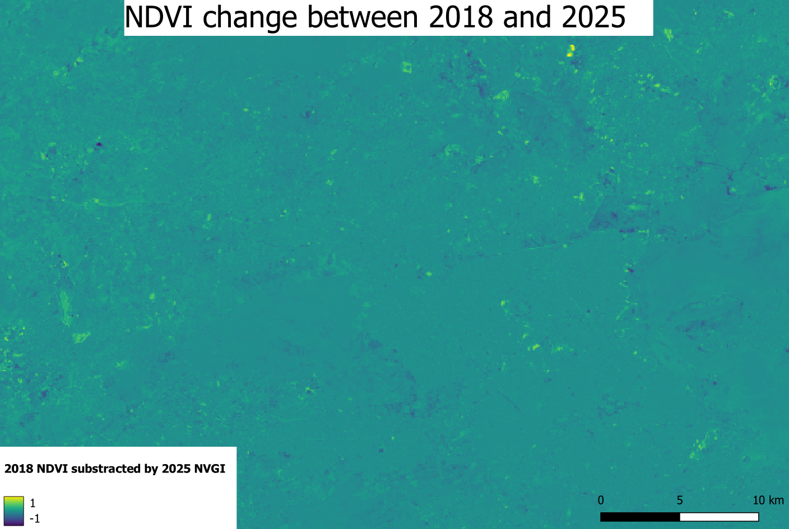

Core Concepts
This assignment aims to create maps of Greater Rio de Janiero showing the Normalized Differece Vegetation Index (NDVI) in 2018 and in 2025. This allows us to visualize how forrestation and urbanization have evolved overtime.Before presenting the findings of these maps it is important to understand some key concepts of how we obtain this data.
The satellites take many pictures and stitch them together into a full accurate map, this is called an orthomosaic map. We are also able to make our own composite orthomosaic map from open data! Our open data source is from Google Earth Engine (GEE) which collects satellite images. We selected the images from 01/07/2018 to 31/12/2018 as well as 7 years later from 01/07/2025 to 31/12/2025. Using GEE scripts and Sentinel-2-data from the Greater Rio de Janeiro region we achieve an ortho mosaic map.
One practical challenge with satellite imagery is clouds which can block the view of the actual surface area. GEE takes images every 5 days and averages these images for the selected time period, resulting in a cloudless composite orthomosaic.
The selected time of year is important when analysing this data because vegetation changes with seasons, and the GEE measures vegetation. This is why we compare the images over the same time period 7 years apart.
The images used here come from Sentinel-2, a satellite operated by the European Space Agency (ESA). This satellite orbits the Earth every five days and captures images in 13 different bands of light, including wavelengths that are invisible to the human eye. This makes it a multispectral satellite, which is extremely valuable to making these maps. Indeed, different surfaces on Earth reflect light in very characteristic ways. By capturing the extra wavelengths, satellites can reveal things that are invisible in a normal photo.
Thanks to these clean images, we can ask questions like how healthy is the vegetation. We do this thanks to vegetation indices which is a mathematical formula producing a single value representing some property of plant life. The most widely used vegetation index is the NDVI — the Normalized Difference Vegetation Index. It works by comparing how much red light versus near-infrared light is being reflected resulting in a number between −1 and +1.
Indeed, the amount of vegetation in any place impacts the amount of red light versus near-infrared light being reflected. Dense, healthy vegetation scores close to +1, unhealthy vegetation scores near 0 and urban environments or water scores near -1. These vegetation indexes measured thanks to multi spectral satellite imagery are relevant to sustainable development because they allow us to map phenomenons like deforestation and locate healthy vegetation.
Maps & Explenations
Here are the five maps that I made to compare the NDVI of Rio de Janeiro between 2018 and 2025.

Observations: In this map, you can see the city as your eyes would see it from space in 2018. The legend signifies that the map is in its “True color” form, meaning that the colors of the map are the actual colors of the area.

Observations: In this map, you can see the city as your eyes would see it from space in 2025. The legend signifyies that the map is in its “True color” form.

Observations: This is the map visualizing the NDVI of the Greater Rio de Janeiro region in 2018. The color scale runs from dark blue (−1, water/non-vegetation) through yellow-green to bright green (+1, dense healthy vegetation). The bright greens in the mountains are the forest, with a high NDVI. The urban areas and water bodies show up as blue/dark because they have a lower NDVI.

Observations:This is the map visualizing the NDVI of the Greater Rio de Janeiro region in 2025. The differences between the NDVI maps of 2018 and 2025 are barely perceivable. This next map will allow us to visualize any small differences.

Observations: This map shows the difference between the two previous NDVI images. It was made using raster subtraction math, subtracting the NDVI of 2018 with the NDVI of 2025. We notice from the legend that the map is almost uniformly at 0. This signifies that the vegetation index did not change much over this period of 7 years. A few scattered purple/blue patches indicate areas where NDVI decreased (possible deforestation, urban expansion, or degradation). The yellow/green spots show areas where vegetation increased (regrowth or seasonal differences). Overall, the vegetation structure of Greater Rio was relatively stable over this period.